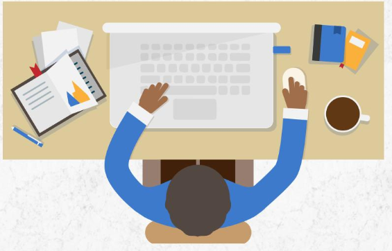
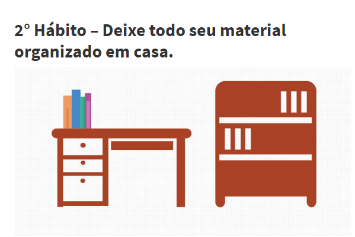
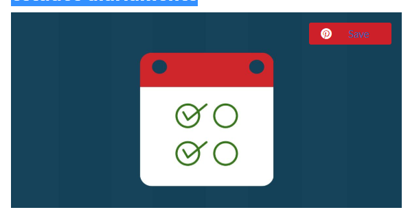
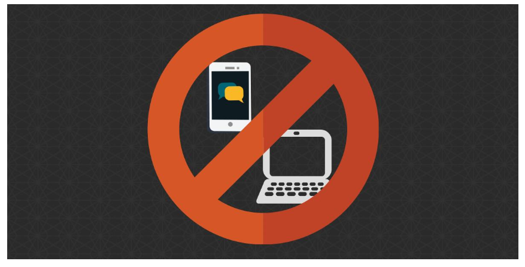

Como estudar em casa: 8 Hábitos essenciais
Daí você decide, é hoje! Separa o material, senta-se à mesa e quando você vai começar a estudar tudo acontece.
Seu
telefone toca, alguém te chama, você fica com sono, enfim, coisas de quem precisa estudar em casa.
Para que você pare de perder tempo com distrações ou fazendo atividades que não tenham nada a ver com estudar,
vou te
apresentar 8 hábitos para estudar em casa.
Cada hábito irá te ajudar a desenvolver uma rotina de estudos que realmente funcione e você consiga aprender
para
conquistar os resultados que você deseja.
Pegue um bloco de notas para anotar os hábitos e boa leitura!
Dica para você aproveitar melhor esse artigo.
Recomendo que você faça um plano de desenvolver cada hábito de estudo individualmente. Você pode começar com o
primeiro
hábito e tente segui-lo por 30 dias, em seguida vá incorporando cada novo hábito assim que você completar o
primeiro.
Por exemplo.
Comece com o primeiro hábito e mantenha-o por 30 dias, ao final de 30 dias se você perceber que conseguiu
realizá-lo
corretamente sem falha ele já estará forte o suficiente para que você passe para o 2° hábito e assim sucessivamente.
Se você começar todos os hábitos de uma vez é mais provável que ao final você não consiga controlá-los e acabe
se
perdendo, se isso acontecer você ficará frustrado e desistirá de estudar. Recomendo que você progrida aos poucos,
hábito
por hábito 🙂
1° Hábito – Estude sempre no mesmo lugar da casa.

O primeiro passo para estabelecer corretamente seu hábitos de estudos em casa é ter um local fixo para estudar.
Isso irá
te ajudar a reforçar o hábito de estudos, pois sempre que você chegar ao seu local de estudos seu cérebro já estará
preparado para estudar.
Eu mesmo tenho um local em casa separado para trabalhar, escrever meus textos e estudar. Quando sento nesse
local me
sinto mais motivado a entrar em ação.Isso acontece por um reforço do hábito de fazer sempre a mesma atividade no
mesmo local.
Escolha um local de estudos ideal, faça desse lugar o seu santuário sagrado dos estudos 🙂 Esse deve ser um
local só
para estudar, portanto evite usá-lo para acessar internet e fazer outras coisas que não tenham haver com os estudos,
usar esse local só para estudos ajudará a reforçar o hábito de estudar.
2° Hábito – Deixe todo seu material organizado em casa.

Deixe sempre seus materiais de estudos organizados. A organização evita que você perca tempo procurando materiais ou
mesmo organizando o local para estudar. Além disso, alivia sua mente do estresse de nunca saber onde as coisas estão.Tenha um local exclusivo para seus livros, canetas e cadernos. Ao terminar sua sessão de estudos devolva tudo aos seus
lugares. O mesmo vale para suas anotações, não jogue tudo de qualquer jeito, senão você nunca mais encontrará aquela
nota importante.O hábito de organizar seus materiais de estudo irá fazer você acelerar seu aprendizado e também evitar a procrastinação.
Eu mesmo antigamente quando ia começar a estudar se não encontrasse meus livros logo desistia, evite que isso aconteça
com você e deixe tudo preparado.3° Hábito – Complete suas metas de estudos diariamente

Nada pior do que ter um cronograma de estudos pronto, mas no fundo você nunca conseguir completá-lo. Você olha para
aquele cronograma todos os dias e sente uma sensação de fracasso e desanimo. Isso acaba com sua motivação para estudar.Quando você avança completando suas metas de estudos você se sente motivado a continuar estudando cada vez mais.
Portanto, separe um tempo para fazer um plano de estudos que seja condizente com sua realidade e depois parta para a
ação.Se você perceber que seu plano de estudos não está dando certo, faça mudanças e evite que o tempo passe, pois isso só
irá minar sua motivação. Lembre-se que nada acontece da noite para o dia, é preciso você estar sempre melhorando seu
cronograma de estudos.4° Hábito – Faça pausas para descansar entre os estudos
 Existem dois problemas grandes ao estudar em casa, ou é o excesso de descanso ou é a falta de descanso. Ambos são ruins,
pois prejudicam seu aprendizado. É preciso que haja equilíbrio para você aprender com eficácia.Você deve ter o hábito de fazer uma pausa de 10 minutos a cada 40 minutos de estudos, eu sei que isso pode parecer ruim
no começo, mas se você desenvolver esse hábito irá perceber como seu aprendizado fica mais rápido.O ideal é que você faça pausas constantes para que seu cérebro fixe melhor a informação, formando mais conexões neurais,
ajudando a memorizar o que você está estudando.
Existem dois problemas grandes ao estudar em casa, ou é o excesso de descanso ou é a falta de descanso. Ambos são ruins,
pois prejudicam seu aprendizado. É preciso que haja equilíbrio para você aprender com eficácia.Você deve ter o hábito de fazer uma pausa de 10 minutos a cada 40 minutos de estudos, eu sei que isso pode parecer ruim
no começo, mas se você desenvolver esse hábito irá perceber como seu aprendizado fica mais rápido.O ideal é que você faça pausas constantes para que seu cérebro fixe melhor a informação, formando mais conexões neurais,
ajudando a memorizar o que você está estudando.Ao fazer as pausas entre os estudos evite:
- Acessar internet: A internet é uma poderosa distração e vai fazer você passar mais tempo em pausa do que o normal.
- Assistir televisão: A televisão também é feita para te prender, portanto se você sentar um pouco é bem provável que você
passe horas na frente da televisão.
No 5° Hábito explico melhor sobre as distrações.
Ao fazer as pausas entre os estudos prefira:
- Caminhar um pouco: Vá até sua varanda ou na frente de sua casa. Reflita um pouco sobre o que você estudou.
- Vá ao banheiro ou tome uma água: É muito importante estar bem hidratado para estudar com qualidade.
5° Hábito – Fique longe das distrações que você tem em casa

Um dos principais problemas de estudar em casa é que a casa da gente foi feita pra o descanso (ainda bem né? Hehehe)
Então ela cheia de distrações, na sala tem televisão, video game, etc. No quarto internet e televisão, na cozinha comida
e ainda tem pessoas que nos distraem.Ou seja.
Você está em um verdadeiro campo minado de distrações. E a única maneira de se manter longe é através do 1° Hábito,
tendo seu local de estudos sagrado. E acima de tudo fique longe de tudo que te distraia.
Você sabe que sou professor, e o terror dos professores é o celular em sala de aula, e não me venha com essa conversa de
novas maneiras de aprender, no estágio atual da nossa sociedade os adolescentes (e muitos adultos) não conseguem estudar
com um celular do lado, serve apenas para distraí-los.Então pare de arrumar desculpas para deixar o celular e o computador do lado. Eles vão te distrair por que todas as
vezes que você os usou foi para se distrair, ou seja, você tem o hábito de usar o celular e o computador para se
esquecer do mundo.Mas Prof. Piccini eu só tenho o celular e o Computador para estudar como fazer?
Então nesses casos você deve usá-los desligados da internet. Desligue o wi-fi ou a internet de sua casa. Esconda o
modem. Caso não seja possível esconder o modem por ter mais pessoas na casa então desinstale o wifi ou a rede do seu
computador.Parecem medidas radicais? Mas são mesmo, só assim você evitará se distrair…
E antes que você pense que tem autocontrole e que é capaz de estudar no computador ou celular sem se distrair com a
internet, quero que você lembre quantas vezes a internet já atrapalhou seus estudos, vou deixar que sua própria
consciência te lembre disso. 😉Ah! Celular no modo Avião ok? E nada de cara feia!
Entenda uma coisa, a internet é feita pra te distrair, o tempo todo existem janelas, sons e chamadas para prender sua
atenção. O mesmo vale para seu celular, quanto mais tempo você passa nas redes sociais melhor para as empresas dessas
redes, por isso tudo é feito para prender sua atenção.